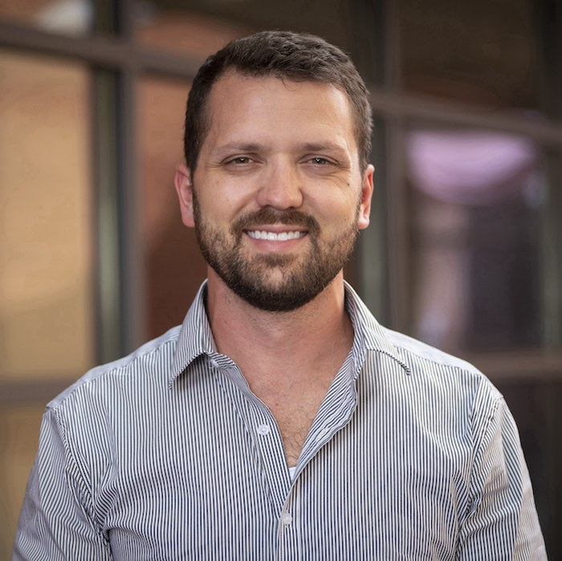

Endothelial dysfunction and RAAS–eNOS signaling
Investigating how renin–angiotensin–aldosterone system signaling and endothelial nitric oxide synthase pathways relate to vascular dysfunction in people.
ASSISTANT PROFESSOR • CLINICAL TRIALS PROGRAM LEAD
I am a clinical researcher studying endothelial dysfunction and RAAS–eNOS signaling in Long COVID and obstructive sleep apnea. My work connects vascular mechanisms with clinical trials to better understand, and ultimately improve, cardiovascular health in these conditions.
Department of Medicine, College of Medicine – Tucson
University of Arizona

RESEARCH FOCUS
Investigating how renin–angiotensin–aldosterone system signaling and endothelial nitric oxide synthase pathways relate to vascular dysfunction in people.
Characterizing vascular function in people with Long COVID through the NIH RECOVER initiative.
Studying endothelial dysfunction in obstructive sleep apnea and testing inspiratory muscle strength training to improve blood pressure and vascular function.
CURRENT WORK
As Clinical Trials Program Lead in the Department of Medicine, I help translate mechanistic questions about the vascular endothelium into well-run human studies, including contributions to the NIH RECOVER Adult Observational Study.
Read about the research →